20 Essential Yoga Poses
Practice these poses to enhance your energy flow and overall well-being

Ardhacakrasana
Mountain Pose - Improves posture, balance, and grounding. Strengthens thighs, knees, and ankles.
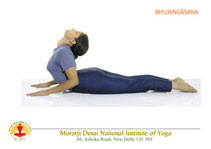
- Tree Pose">Bhujangasana
Tree Pose - Enhances balance and stability. Strengthens legs and improves concentration.
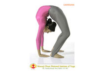
Chackrasana
Cobra Pose - Opens the heart chakra, strengthens spine, and improves flexibility.

Ardh Halasana
Triangle Pose - Stretches legs, hips, and spine. Improves digestion and reduces anxiety.
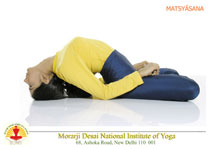
Matyasana
Child's Pose - Calms the mind, relieves stress, and gently stretches the back and hips.
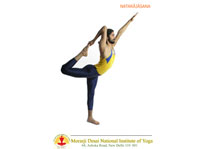
Natrajasana
Corpse Pose - Deep relaxation pose that calms the nervous system and reduces stress.
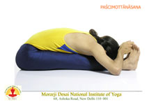
Paschimottasana
Downward Dog - Energizes the body, stretches shoulders, hamstrings, and calves.
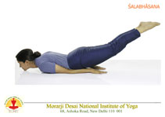
Salabhasana I
Warrior I - Builds strength and stamina. Opens chest and lungs, improves focus.
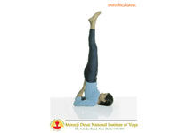
Sarvangasana
Warrior II - Strengthens legs and arms. Increases stamina and concentration.
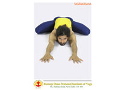
Sasankasana
Chair Pose - Strengthens thighs, ankles, and spine. Stimulates the heart and diaphragm.
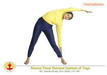
Setu Trikonasana
Bridge Pose - Opens the heart, stretches chest and spine. Calms the brain.
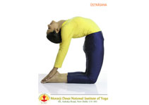
Ushtrasana
Bow Pose - Stretches entire front body. Strengthens back muscles and improves posture.
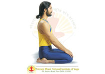
Vajrasana
Seated Forward Bend - Calms the mind, stretches spine and hamstrings.
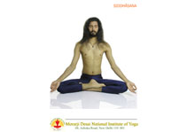
Ardha Siddhasana
Half Lord of the Fishes - Improves spine flexibility and digestion. Energizes the body.
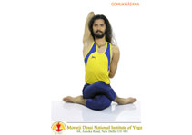
Gomukhasana
Dancer Pose - Improves balance, strengthens legs, and opens the chest.
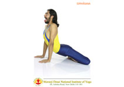
Simhasana
Eagle Pose - Improves balance and focus. Stretches shoulders and upper back.